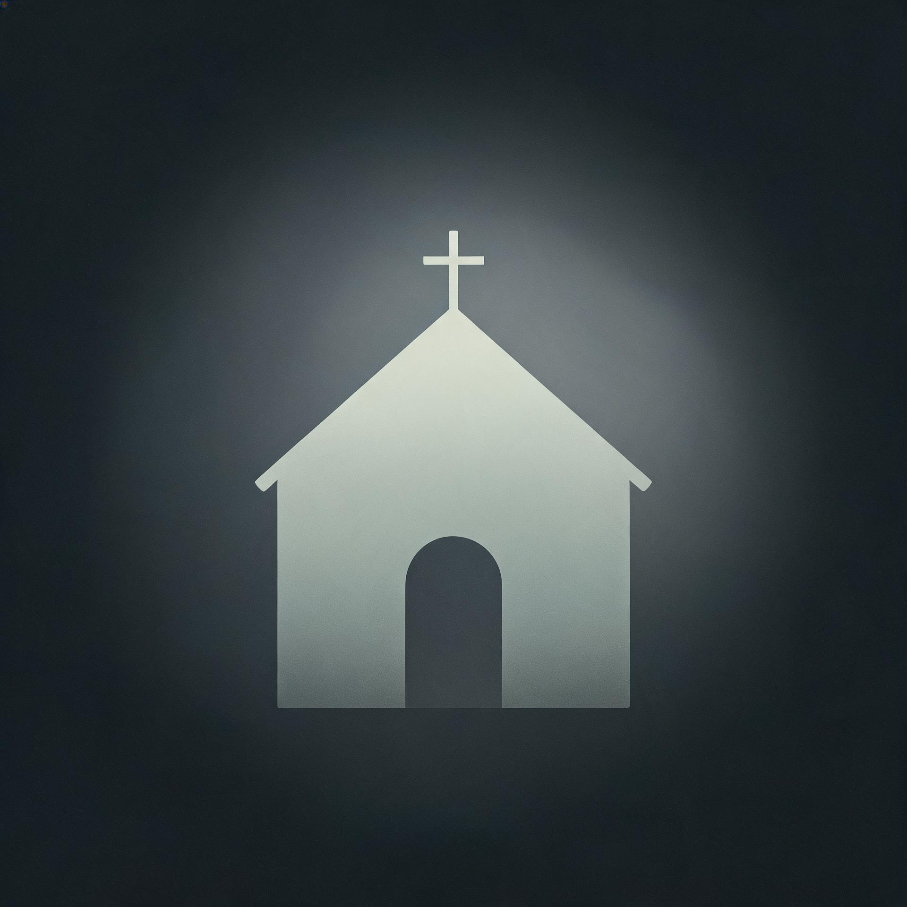

保留单件小教堂、拱门洞与细十字的核心形态，去掉侧窗、檐口线、高光反射与硬边描边。 玻璃只保留一层极低反差的明度过渡，靠背后一层 12% 的柔光托住体积，其余全部交给留白。
64px 以下自动切换为单色填充，丢弃渐变与柔光，避免缩小后发糊。
深色底 + 居中 62% 占比，圆角 23%
浅色底改用更浅的玻璃与 10% 投影
| 玻璃体 | 线性明度过渡 #E3E7DC → #C3CDC0，等效不透明度 92%，不叠第二层高光 |
|---|---|
| 模糊 / 柔光 | 背后一层同形高斯模糊，σ = 3.5% × 画布，不透明度 12%；无描边、无内阴影 |
| 背景 | 径向 #21262a → #141618，半径约为画布 1.2 倍，与主体的明度差控制在 3 档以内 |
| 浅色版 | 玻璃 #E9ECE4 → #D2DACF，唯一投影 y 8 / blur 24 / 10% |
| 色彩 |
#E3E7DC
#C3CDC0
#AEBBAA
#21262A
#141618
最高饱和度 ≤ 8%，明度跨度 ≤ 22%
|
| 留白 | 主体占画布宽度 49%（约二分之一）；顶部留白 11%、底部留白 23%，重心略上提；图标安全区内缩 1/4 边长 |
| 字标 | 与图形间距 = 图形高度的 30%；字号为图形高度的 1/6.5；字距 0.14em；辅助文字字距 0.06em |
| 小尺寸 | ≤ 64px 使用单色 #D5DBD0，几何对齐到整数像素，取消柔光 |

左侧为同一方向的位图渲染参考（决定体积与光的走向）。矢量版在其基础上统一了轮廓比例与留白， 并把不可控的光晕收敛为固定参数的柔光层，保证任意尺寸下表现一致。
矢量源文件：design/logo/dchurch-mark.svg · 可直接转 PNG、单色反白与小程序图标。